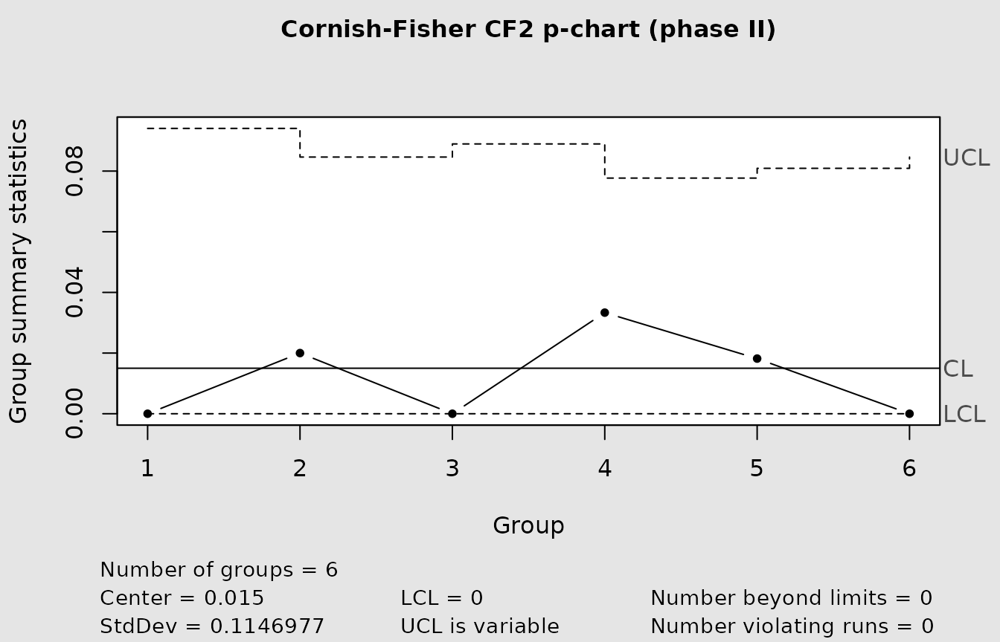
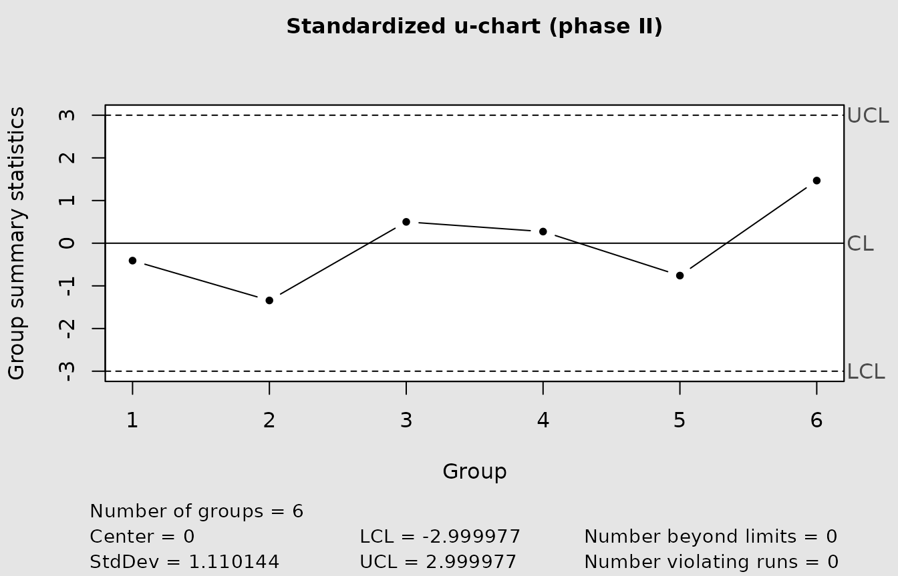
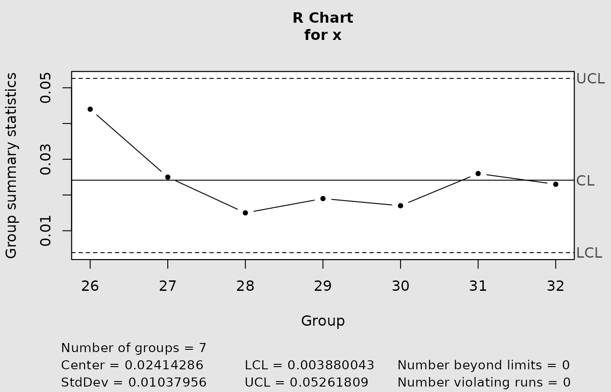
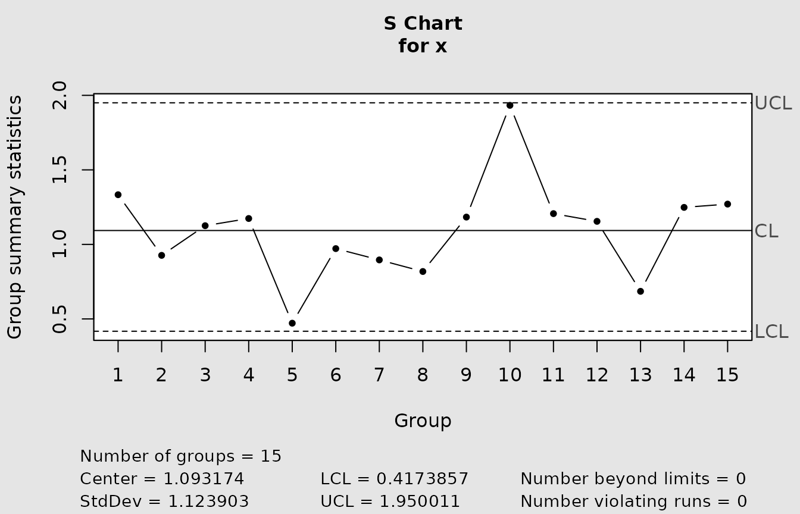
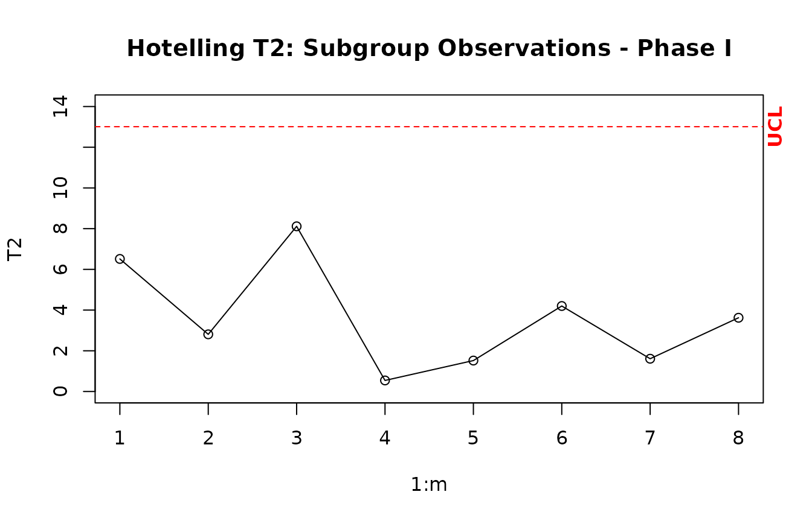

Getting started with IQCC
Source:vignettes/getting-started-with-iqcc.Rmd
getting-started-with-iqcc.RmdWhat IQCC is for
IQCC provides improved quality-control charts for settings in which familiar normal, three-sigma limits can be poorly calibrated. These settings include small subgroups, rare nonconformities, discrete or skewed statistics, and multivariate variability. The package emphasizes exact limits where they are available, distributional corrections where they are justified, and explicit calculation of the actual false-alarm risk.
IQCC complements qcc. The latter provides a broad
statistical process-control framework, and IQCC reuses it for several
plots. IQCC adds specialized numerical functions and plotting wrappers
for corrected attribute charts, double-sampling plans, exact range
limits, generalized variance, and the auxiliary trace statistic. Use
qcc for a general SPC workflow; use IQCC when the
calibration of a particular small-sample or non-normal statistic
matters.
Numerical functions and chart wrappers
The preferred workflow is to calculate and inspect a design before
drawing a chart. For example, pchart_limits() returns the
limits without plotting, and pchart_alpha_risk() evaluates
their exact binomial false-alarm probability. The wrapper
cchart.p() applies the selected method to observed
subgroups and returns the underlying qcc object
invisibly.
p_limits <- pchart_limits(p = 0.015, n = 20, type = "cf2")
p_risk <- pchart_alpha_risk(
p = 0.015,
n = 20,
lcl = p_limits$lcl,
ucl = p_limits$ucl
)
data.frame(
lcl = p_limits$lcl,
center = p_limits$center,
ucl = p_limits$ucl,
actual_alpha = p_risk
)
#> lcl center ucl actual_alpha
#> 1 0 0.015 0.1303192 0.003178083The same separation is available for p and u limits, DS-np operating
characteristics, generalized variance, and tr(V). The older
R, S, and Hotelling interfaces remain primarily chart-oriented; their
plotting functions should not be mistaken for generic numerical limit
APIs.
Phase I, Phase II, and reference parameters
Phase I data establish or assess the in-control reference. Phase II data are new subgroups monitored against limits fixed from that reference. IQCC uses method-specific argument names:
| Chart | Phase I | Phase II | Known reference |
|---|---|---|---|
| p |
x1 or p1
|
x2 or p2
|
phat |
| u |
x1 or u1
|
x2 or u2
|
lambda |
| R |
y for exact limits |
x |
none in the wrapper |
| Hotelling T-squared |
data.1(), stats(),
T2.1()
|
data.2(), T2.2()
|
Phase I estimates |
| generalized variance | x1 |
x2 |
Sigma |
tr(V) |
x |
newdata |
Sigma0 |
When phat, lambda, Sigma, or
Sigma0 is supplied, it is treated as an external in-control
reference. Otherwise, the relevant wrapper estimates it from Phase I.
Plug-in limits based on estimated parameters do not automatically
account for the additional estimation uncertainty.
Input formats
Attribute charts accept one-dimensional vectors. Counts are paired with their sample or inspection sizes; proportions and rates can be supplied directly.
p_counts <- c(0, 1, 0, 2, 1, 0)
p_sizes <- c(40, 50, 45, 60, 55, 50)
p_proportions <- p_counts / p_sizes
u_counts <- c(1, 0, 3, 2, 1, 4)
u_sizes <- c(10, 12, 15, 11, 14, 13)
u_rates <- u_counts / u_sizes
data.frame(
p_count = p_counts,
p_proportion = p_proportions,
u_count = u_counts,
u_rate = u_rates
)
#> p_count p_proportion u_count u_rate
#> 1 0 0.00000000 1 0.10000000
#> 2 1 0.02000000 0 0.00000000
#> 3 0 0.00000000 3 0.20000000
#> 4 2 0.03333333 2 0.18181818
#> 5 1 0.01818182 1 0.07142857
#> 6 0 0.00000000 4 0.30769231Multivariate variability functions accept a list of subgroup matrices, a subgroup-by-observation-by-variable array, or a matrix made by stacking equal subgroups. Here all three representations contain the same data.
g1 <- cbind(
x = c(-1, 0, 1, -1, 1),
y = c(-1, 1, 0, 1, -1)
)
g2 <- sweep(g1, 2, c(0.2, -0.1), "+")
g3 <- g1 %*% matrix(c(1.1, 0.1, 0, 0.9), nrow = 2)
groups <- list(g1, g2, g3)
group_array <- array(NA_real_, dim = c(3, 5, 2))
for(i in seq_along(groups))
group_array[i, , ] <- groups[[i]]
stacked_groups <- do.call(rbind, groups)
cbind(
from_list = gv_stat(groups),
from_array = gv_stat(group_array),
from_stacked_matrix = gv_stat(stacked_groups, size = 5)
)
#> from_list from_array from_stacked_matrix
#> [1,] 0.9375000 0.9375000 0.9375000
#> [2,] 0.9375000 0.9375000 0.9375000
#> [3,] 0.9188438 0.9188438 0.9188438The legacy Hotelling helpers use a different array convention:
observation-by-variable-by-subgroup. Check dim() before
passing an array between the two families.
Corrected p and u charts
The numerical p and u functions support normal, first-order
Cornish-Fisher ("cf1"), and second-order Cornish-Fisher
("cf2") limits. Their chart wrappers additionally support
standardized observations.
p_methods <- do.call(
rbind,
lapply(c("normal", "cf1", "cf2"), function(method) {
lim <- pchart_limits(0.02, n = 40, type = method)
data.frame(method = method, lcl = lim$lcl, ucl = lim$ucl,
applicable = lim$applicable)
})
)
u_methods <- do.call(
rbind,
lapply(c("normal", "cf1", "cf2"), function(method) {
lim <- uchart_limits(0.20, n = 10, type = method)
data.frame(method = method, lcl = lim$lcl, ucl = lim$ucl)
})
)
p_methods
#> method lcl ucl applicable
#> 1 normal 0 0.08640732 FALSE
#> 2 cf1 0 0.11840677 TRUE
#> 3 cf2 0 0.10890324 TRUE
u_methods
#> method lcl ucl
#> 1 normal 0 0.6242608
#> 2 cf1 0 0.7575918
#> 3 cf2 0 0.7340222The p-chart workflow below estimates the in-control proportion from Phase I, computes the Phase II limits explicitly, and then constructs the Phase II chart. This makes the sequence from reference data to monitoring data visible.
p_phase1_counts <- c(1, 0, 1, 2, 0, 1, 1, 0)
p_phase1_sizes <- rep(50, length(p_phase1_counts))
p_phase1_estimate <- sum(p_phase1_counts) / sum(p_phase1_sizes)
p_phase2_limits <- pchart_limits(
p = p_phase1_estimate,
n = p_sizes,
type = "cf2"
)
p_chart <- cchart.p(
type = "cf2",
x1 = p_phase1_counts,
n1 = p_phase1_sizes,
x2 = p_counts,
n2 = p_sizes
)
c(
estimated_phat = p_phase1_estimate,
smallest_phase2_ucl = min(p_phase2_limits$ucl),
largest_phase2_ucl = max(p_phase2_limits$ucl)
)
#> estimated_phat smallest_phase2_ucl largest_phase2_ucl
#> 0.01500000 0.07768796 0.09407003
The u chart uses a known rate and direct rate input to demonstrate the prospective alternative.
u_chart <- cchart.u(
type = "standardized",
u2 = u_rates,
n2 = u_sizes,
lambda = 0.15
)
class(u_chart)
#> [1] "qcc"
For estimated parameters, supply Phase I counts or proportions/rates
instead. With unequal sizes, IQCC uses pooled estimators:
sum(counts) / sum(sizes).
Double-sampling np
A DS-np plan can accept or signal after the first sample, or inspect a second sample when the first count falls in the warning region. The pure functions calculate acceptance probability, ARL, and ASS for explicit limits.
ds_plan <- list(
p0 = 0.005,
p1 = 0.010,
n1 = 50,
n2 = 242,
wl = 1.5,
ucl1 = 2.5,
ucl2 = 4.5
)
data.frame(
arl0 = with(ds_plan, dsnp_arl(p0, n1, n2, wl, ucl1, ucl2)$arl),
arl1 = with(ds_plan, dsnp_arl(p1, n1, n2, wl, ucl1, ucl2)$arl),
ass0 = with(ds_plan, dsnp_ass(p0, n1, n2, wl, ucl1)$ass)
)
#> arl0 arl1 ass0
#> 1 200.0416 21.37162 55.82639The chart object records every stage decision as well as its design and operating characteristics.
ds_chart <- cchart.DSnp(
x1 = c(0, 1, 2, 3, 1),
x2 = c(NA, NA, 2, NA, NA),
n1 = 10,
n2 = 20,
p0 = 0.05,
p1 = 0.10,
wl = 1.5,
ucl1 = 2.5,
ucl2 = 4.5,
plot = FALSE
)
ds_chart$data
#> index x1 x2 total stage signal
#> 1 1 0 NA NA accept_first FALSE
#> 2 2 1 NA NA accept_first FALSE
#> 3 3 2 2 4 accept_second FALSE
#> 4 4 3 NA NA signal_first TRUE
#> 5 5 1 NA NA accept_first FALSE
ds_chart$performance
#> $arl0
#> [1] 58.35236
#>
#> $ass0
#> [1] 11.4927
#>
#> $p_signal0
#> [1] 0.01713727
#>
#> $arl1
#> [1] 7.531628
#>
#> $ass1
#> [1] 13.8742
#>
#> $p_signal1
#> [1] 0.1327734dsnp_limits() searches limits for fixed n1
and n2; dsnp_design() searches across supplied
sample-size ranges. These are exhaustive discrete searches over the
requested ranges, not continuous optimization routines.
Range and standard-deviation charts
Rows are subgroups and columns are observations for the R and S
wrappers. The range chart offers conventional ("norm") and
exact relative-range ("tukey") limits. The S chart offers
normalized ("n") and exact chi-square ("e")
limits.
data(pistonrings)
r_chart <- cchart.R(
x = pistonrings[26:32, ],
n = 5,
type = "tukey",
y = pistonrings[1:25, ]
)
class(r_chart)
#> [1] "qcc"
class(s_chart)
#> [1] "qcc"Use alpha.risk(n) to inspect the actual risk of the
conventional R chart, and table.qtukey() to inspect
relative-range quantiles. The current R and S wrappers do not expose a
complete pure numerical limits object analogous to
pchart_limits().
Hotelling T-squared
The Hotelling workflow estimates the Phase I mean and covariance, computes a T-squared statistic for each subgroup, and evaluates later subgroups against the Phase II design. Its simulation helpers return arrays in observation-by-variable-by-subgroup order.
set.seed(2026)
hotelling_phase1 <- data.1(
m = 8,
n = 5,
mu = c(0, 0),
Sigma = diag(2)
)
hotelling_reference <- IQCC::stats(hotelling_phase1, m = 8, n = 5, p = 2)
hotelling_t2_phase1 <- T2.1(hotelling_reference, m = 8, n = 5)
hotelling_phase2 <- data.2(hotelling_reference, n = 5, p = 2)
hotelling_t2_phase2 <- T2.2(
hotelling_phase2,
hotelling_reference,
n = 5
)
cchart.T2.1(hotelling_t2_phase1, m = 8, n = 5, p = 2)
c(phase1_max = max(hotelling_t2_phase1), phase2 = hotelling_t2_phase2)
#> phase1_max phase2
#> 8.114591 3.856580
cchart.T2.2() draws the operational Phase II chart. The
Phase I and Phase II limits differ, so the two plotting functions are
not interchangeable.
Generalized variance and tr(V)
For each multivariate subgroup, gv_stat() computes the
determinant of the sample covariance matrix. trv_stat()
computes (n - 1) tr(Sigma0^-1 S). The determinant and
standardized trace detect different covariance changes and are
complementary.
data.frame(
subgroup = seq_along(groups),
generalized_variance = gv_stat(groups),
trace_statistic = trv_stat(groups, Sigma0 = diag(2))
)
#> subgroup generalized_variance trace_statistic
#> 1 1 0.9375000 8.0
#> 2 2 0.9375000 8.0
#> 3 3 0.9188438 7.9Dimension-two generalized-variance limits have an exact
implementation. Normal, Cornish-Fisher, and simulation methods are also
available. Simulation is reproducible when seed is
supplied.
gv_method_table <- do.call(
rbind,
lapply(c("normal", "cf", "exact"), function(method) {
lim <- gv_limits(n = 5, p = 2, det_sigma = 1, type = method)
data.frame(method = method, center = lim$center, ucl = lim$ucl)
})
)
gv_simulated <- gv_limits(
n = 5,
p = 2,
det_sigma = 1,
type = "simulation",
nsim = 2000,
seed = 2026
)
gv_method_table
#> method center ucl
#> 1 normal 0.75 3.305568
#> 2 cf 0.75 6.769365
#> 3 exact 0.75 6.288749
gv_simulated[c("type", "ucl", "nsim", "seed")]
#> $type
#> [1] "simulation"
#>
#> $ucl
#> [1] 5.379544
#>
#> $nsim
#> [1] 2000
#>
#> $seed
#> [1] 2026The trace statistic has an exact chi-square upper limit under a known in-control covariance matrix. Its simulation option is mainly a diagnostic comparison with that same null distribution.
gv_chart <- cchart.GV(
x1 = groups[1:2],
x2 = groups[3],
type = "cf",
plot = FALSE
)
trv_chart <- cchart.trV(
x = groups[1:2],
newdata = groups[3],
Sigma0 = diag(2),
type = "chisq",
plot = FALSE
)
summary(gv_chart)
#> Generalized Variance Control Chart
#> Dimension: p = 2 ; subgroup size n = 5
#> Subgroups: 3 (Phase I: 2 ; Phase II: 1 )
#> Limits: cf / upper ; nominal alpha = 0.0027
#> Covariance: estimated from Phase I subgroups
#> LCL = 0 ; center = 0.8036 ; UCL = 7.253
#> Signals: 0
summary(trv_chart)
#> Trace-Statistic Control Chart
#> Dimension: p = 2 ; subgroup size n = 5
#> Subgroups: 3 (Phase I: 2 ; Phase II: 1 )
#> Limits: chisq ; nominal alpha = 0.0027 ; df = 8
#> Covariance: supplied Sigma0
#> Center = 8 ; UCL = 23.57
#> Signals: 0If Sigma or Sigma0 is omitted, Phase I
covariance information is used as a plug-in estimate. Phase II
observations never update that reference. The nominal known-parameter
distribution does not include the extra uncertainty introduced by
estimating the reference from a finite Phase I sample.
Choosing a method
-
normaluses conventional or moment-matched Gaussian limits. -
cf1andcf2are first- and second-order Cornish-Fisher methods for p and u charts. Generalized variance usestype = "cf"withcf_order = 1or2. -
exactrefers to a supported distributional result, not to simulation. Its scope depends on the statistic and dimension. -
standardizedis available in the p and u plotting wrappers and places subgroup observations on a z scale. -
simulationuses Monte Carlo quantiles. Setnsimandseed, and report simulation error when using the result scientifically. - The exact
tr(V)method is named"chisq", reflecting its chi-square null distribution.
An exact known-parameter limit can become a plug-in operational limit when its reference parameter is estimated. Report that distinction explicitly.
Inspecting limits and signals
Modern IQCC chart objects are lists. Inspect their components rather than reading values from a plot.
data.frame(
chart = c("DS-np", "generalized variance", "tr(V)"),
n_statistics = c(
nrow(ds_chart$data),
length(gv_chart$statistics),
length(trv_chart$statistics)
),
n_signals = c(
sum(ds_chart$data$signal),
length(gv_chart$out.of.control),
length(trv_chart$out.of.control)
)
)
#> chart n_statistics n_signals
#> 1 DS-np 5 1
#> 2 generalized variance 3 0
#> 3 tr(V) 3 0
gv_chart$limits[c("lcl", "center", "ucl", "type", "alpha")]
#> $lcl
#> [1] 0
#>
#> $center
#> [1] 0.8035714
#>
#> $ucl
#> [1] 7.252891
#>
#> $type
#> [1] "cf"
#>
#> $alpha
#> [1] 0.0027For p and u charts, inspect the returned qcc object,
including its statistics, limits, and
violations components. For DS-np, |S|, and
tr(V), summary() provides a compact account of
parameters, phases, limits, and signals.
IQCC generally signals strict excursions beyond a limit. For
generalized variance, a point signals when it is below the LCL or above
the UCL; equality does not signal. The tr(V) chart signals
only when the statistic is strictly above its UCL. DS-np uses integer
thresholds derived from its fractional limits, so inspect
ds_chart$limits before interpreting a boundary count.
Common errors
- Do not supply both counts and proportions/rates for the same attribute-chart phase.
- Match every count vector with a sample-size vector of the same length, unless a scalar size is intentionally recycled.
- Do not use
p1to mean the same thing everywhere: incchart.p()it is a vector of Phase I proportions, while in DS-np functions it is the scalar out-of-control process proportion. - For DS-np, provide a second-stage count whenever the first-stage
count lies in the warning zone; use
NAonly when the second sample is not required. - For multivariate variability, use subgroup-by-observation-by-variable arrays; the legacy Hotelling helpers use observation-by-variable-by-subgroup arrays.
- Generalized variance requires more observations than variables in
every subgroup.
SigmaandSigma0must be symmetric positive-definite matrices with the correct dimension. - Do not describe a simulated limit as exact, and do not assume a plug-in limit has known-parameter coverage.
Further documentation
Read
vignette("high-quality-processes", package = "IQCC") for
corrected p charts and DS-np plans,
vignette("statistical-foundations", package = "IQCC") for
formulas and published validations, and
vignette("iqcc-positioning", package = "IQCC") for the
package’s scope. Function manuals contain the complete input validation,
return values, decision inequalities, and method-specific
limitations.